2. 功能概述与业务背景
产品定位：员工兴趣圈运营工具。后台配置圈子、活动、分类、权限规则与首页装修；员工在 H5/PC 按装修布局发现圈子、加入、报名活动、评论与发布精彩瞬间。
为什么做：把散落的团建/兴趣活动收口到可审核、可发布、可签到、可统计的闭环；装修让运营控制 C 端首页模块顺序与样式。
目标用户：平台运营（B 端）；全员员工、圈子负责人与成员（C 端）。当前 C 端固定演示账号 林浅。
核心场景：运营建圈/审圈/发布圈；装修首页；建活动并发布（无活动审核页）；发签到码；员工浏览→加入→报名（含多场次）→签到→发瞬间。
 后台概览页-数据看板-页面整体：默认页：日期范围、五张 KPI、饼图、待办与进行中活动表。
后台概览页-数据看板-页面整体：默认页：日期范围、五张 KPI、饼图、待办与进行中活动表。
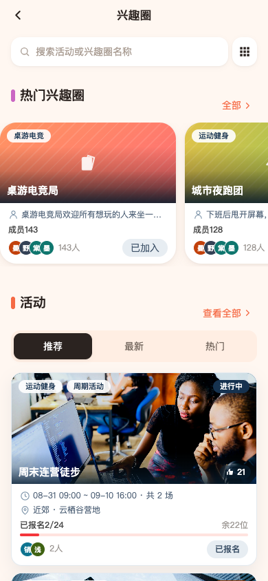
H5首页-装修模块-页面整体：默认：搜索+快捷菜单、热门兴趣圈、活动 Tab、往期精彩回顾（已结束活动）。无轮播、无 AI。
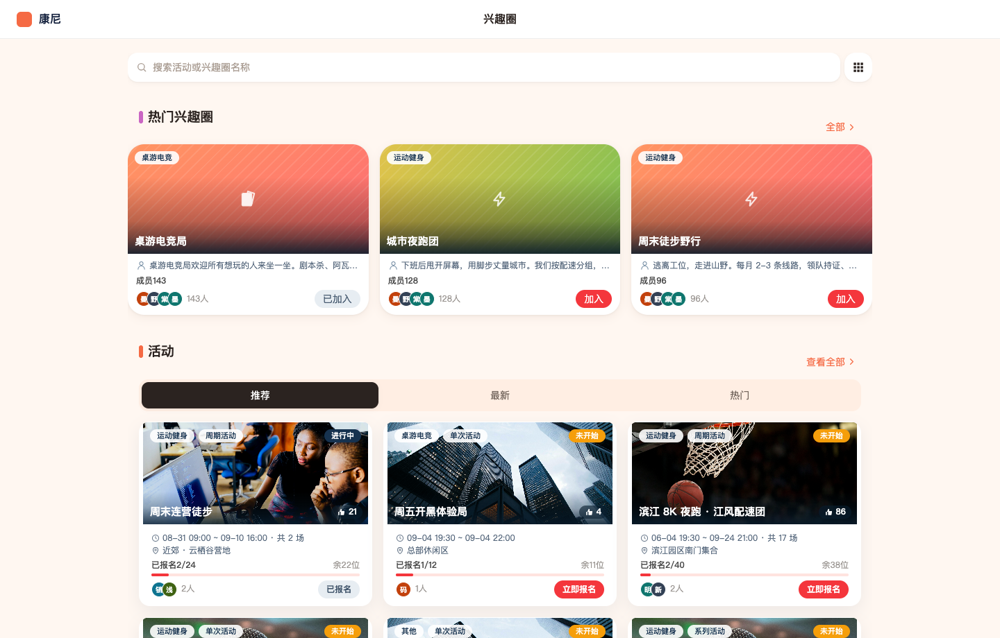
PC首页-装修模块-页面整体：同一套默认区块；PC 圈子大图 3 条、活动 latestCount 默认 6（三列）、回顾 4 条。
6. 用户流程
员工报名（P0） 入口：H5/PC 首页活动卡报名或进详情 CTA → 若未入组：无场次则 signupAndJoinFree；有场次则先入组再打开选场 sheet → 已入组：无场次 toggle 报名/取消；有场次打开 sheet 勾选 → toast「报名成功,已通知发起人」或「报名场次已更新」。异常：入组待审则 toast 并禁用 CTA。
员工建圈（P1） 规则允许 → 快捷菜单「创建兴趣圈」→ 名称必填 → 创建。员工创建默认 publishStatus=未发布。需审 toast「已提交审核，通过并发布后对其他员工可见」；无需审 toast「兴趣圈已创建，发布后对其他员工可见」。发现列表还要求已发布。
运营审圈并发布（P0） 列表「审核」→ 通过/驳回 → 未发布时点「发布」→ C 端可发现。撤销发布后其他员工不可见。
运营装修首页（P0） 兴趣圈装修 → 拖选区块/改样式（即时写入 draft）→ 点「保存」把 draft 复制到 published 并 toast「已保存，C端首页已更新」。原型 C 端 useIgDecoration 读的是 draft，故未点保存首页也会变。
运营发活动（P0） 新建活动填封面/标题≤20/排期/人数 → 保存（默认未发布、auditStatus=无需审核、needAudit=false）→ 列表/详情点「发布」→ C 端可见。无提交审批、无活动审核弹窗。
员工建活动（P1） 有资格（负责人，或规则允许成员）→ 创建活动表单 → 成功则 store 写 publishStatus=已发布 + auditStatus=无需审核，toast「活动已发布」。失败 toast「创建失败」。
员工发瞬间（P1） 活动进行中或已结束且已报名 → 发布瞬间（不限次数）。表单必选所属兴趣圈与该圈下已报名活动。未开始/已终止不可发。
员工评分（P1） 活动已结束 → 详情在简介与评论区之间出「活动评分」→ 已报名未评：选星后点「确认评分」，toast「已评分」，每人一次。未报名只看均分/人数，无确认钮。进行中不展示该块。
积分发放与扣回（P1，产品确认） 员工完成动作 → 按规则页固定额度入账（受每日上限）。活动积分：活动结束后结算；开启签到码则未扫码不发活动积分。员工自己删除评论或精彩瞬间 → 扣回该笔已发积分。管理员在后台删除评论/瞬间 → 内容下线，不扣回员工已得积分。原型无账本、C 端无到账/扣回提示。
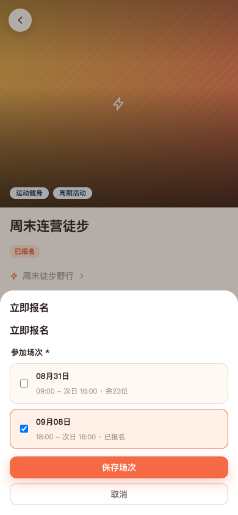
H5活动详情页-报名模块-场次选择弹层：多场次活动点立即报名后出底部 sheet。勾选场次；已报名过主按钮「保存场次」。不展示报名人姓名/手机号。
7. 页面级需求说明
7.1 后台概览页
页面目标：按日期范围看规模、待办与进行中活动。
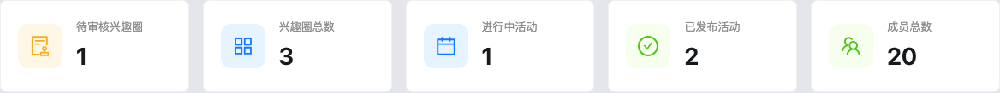
后台概览页-KPI模块-指标卡：五张卡：待审核兴趣圈、兴趣圈总数、进行中活动、已发布活动、成员总数。
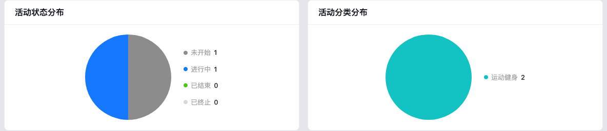
后台概览页-图表模块-饼图：活动状态分布、活动分类分布（饼图）。
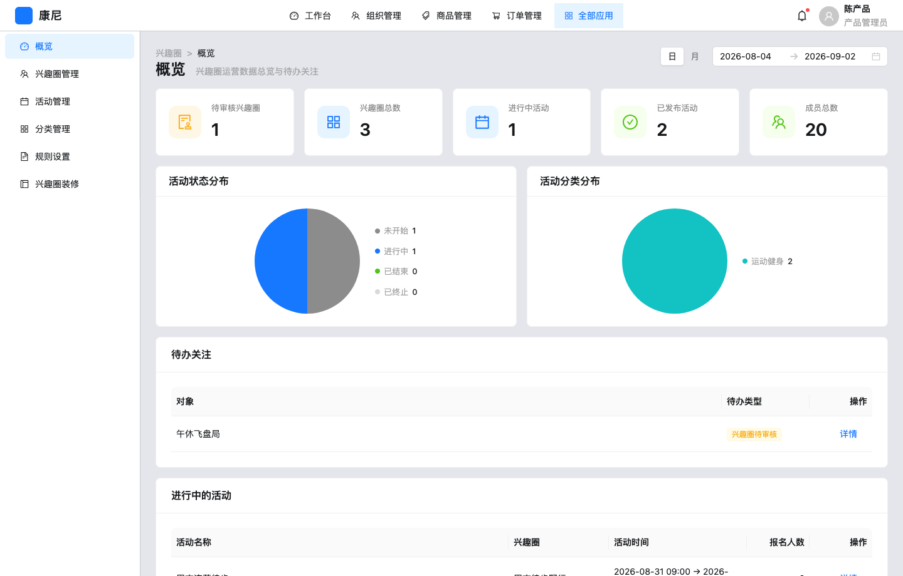
后台概览页-待办模块-关注表与进行中表：待办关注 + 进行中的活动（名称、圈子、时间、报名人数、详情）。
组件显示逻辑
| 组件路径 | 默认状态 | 显示/隐藏 | 启用/禁用 | 数据来源 | 空/错/加载 | 权限 |
|---|
| 后台概览页-标题模块-日期范围 | 默认区间 defaultOverviewDateRange | 始终 | 可改 | 本地 state | — | 无 |
| 后台概览页-KPI模块-待审核兴趣圈卡 | 显示数字 | 始终 | 可点，跳兴趣圈列表 | 范围内 computeInterestGroupOverviewStats | 0 仍显示 | 无 |
| 后台概览页-KPI模块-进行中活动卡 | 显示数字 | 始终 | 可点，跳活动管理 | 范围内进行中活动数 | 0 仍显示 | 无 |
| 后台概览页-待办模块-关注表 | 有则列出 | 无待办 Empty「暂无待办」 | 详情启用 | buildInterestGroupAttentionRows | Empty | 无 |
| 后台概览页-进行中模块-活动表 | 有则列出 | 空 Empty「当前没有进行中的活动」 | 详情跳活动详情 | buildInterestGroupInProgressRows | Empty | 无 |
已去掉「待审核活动 / 待审核瞬间」KPI。产品确认不做瞬间审核，概览也无瞬间待办。
操作说明
| 操作名称 | 组件路径 | 触发 | 前置 | 启用 | 用户动作 | 系统响应 | 跳转 |
|---|
| 查看待审圈子 | 后台概览页-KPI模块-待审核兴趣圈卡 | 卡片 | 无 | 始终 | 单击 | 路由切换 | interest-group-list |
| 处理待办行 | 后台概览页-待办模块-详情按钮 | 链接按钮 | 有行 | 始终 | 单击 | 打开对应详情 | targetPage + recordId |
7.2 后台兴趣圈管理页
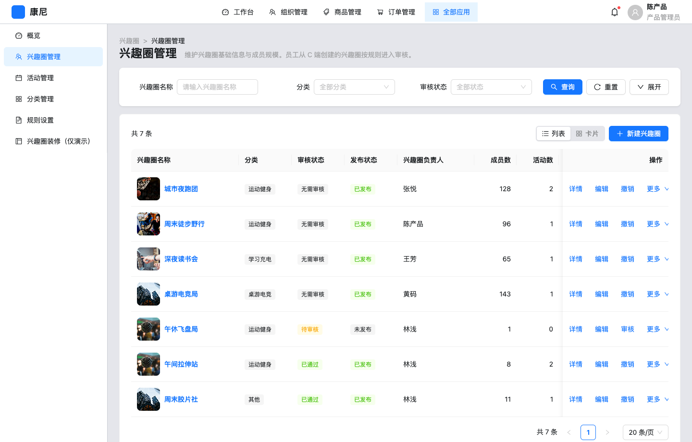
后台兴趣圈管理页-页面整体-列表：查询区 + 列表/卡片切换 + 新建兴趣圈 + 表格（封面、兴趣圈名称、分类、审核、发布、兴趣圈负责人、成员/活动数、创建时间、操作）。无加入方式、无活动区域。
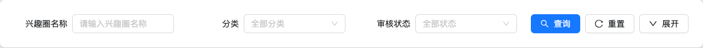
后台兴趣圈管理页-查询筛选-条件区：兴趣圈名称、分类、审核状态、发布状态；查询/重置。
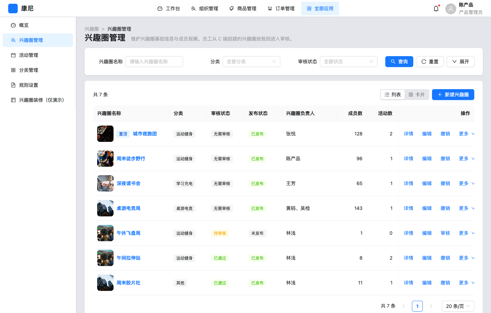
后台兴趣圈管理页-列表表格-数据表：名称可点进详情。置顶 Tag 在前。操作含置顶、未置顶行上移/下移。
后台兴趣圈管理页-卡片模块-卡片网格：封面卡展示发布状态与行操作。
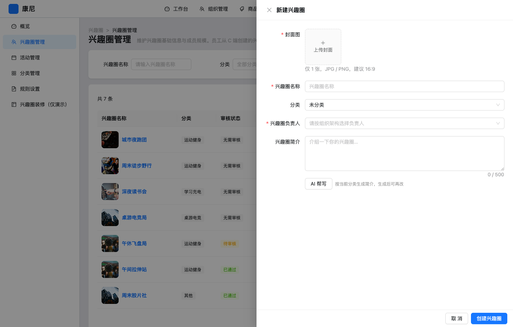
后台兴趣圈管理页-新建模块-表单抽屉：标题「新建兴趣圈」。封面、兴趣圈名称≤40、分类、兴趣圈负责人 TreeSelect 多选至少 1 人、简介≤500、AI 帮写。无活动区域、无标签。成功 toast「兴趣圈创建成功」。
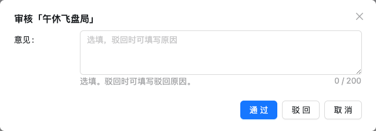
后台兴趣圈管理页-审核模块-审核弹窗：示例「午休飞盘局」。通过 / 驳回 / 取消。
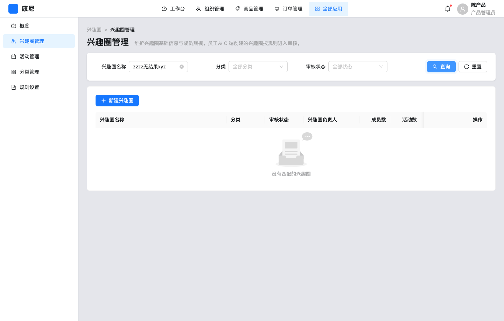
后台兴趣圈管理页-列表表格-无匹配空状态：查询无结果文案「没有匹配的兴趣圈」。
字段说明
| 字段名称 | 组件路径 | 控件 | 必填 | 默认 | 校验 | 选项 | 业务含义 |
|---|
| 封面图 | 后台兴趣圈管理页-新建模块-封面上传 | Upload 1 张 | 新建是 | 空 | 新建无图 warning「请上传封面图」 | image/* JPG/PNG 建议 16:9 | 列表与详情头图 |
| 兴趣圈名称 | 后台兴趣圈管理页-新建模块-名称输入 | Input | 是 | 空 | 非空；trim 后 ≤40 | — | 展示名 |
| 分类 | 后台兴趣圈管理页-新建模块-分类选择 | Select | 否 | 空=未分类 | 仅启用分类（编辑保留原禁用 key） | 分类表 | 筛选与 C 端标签 |
| 兴趣圈负责人 | 后台兴趣圈管理页-新建模块-负责人树 | TreeSelect 多选 | 是 | 空 | 至少 1 人 | 组织人员树 | leadEmployeeIds；C 端不可退出 |
| 兴趣圈简介 | 后台兴趣圈管理页-新建模块-简介 | TextArea | 否 | 空 | ≤500 计字 | — | 详情介绍 |
| 发布状态 | 后台兴趣圈管理页-查询筛选-发布状态 | Select | 否 | 全部 | — | 未发布 / 已发布 | 控制 C 端是否可见 |
| 加入方式 | — | 无控件 | — | 写死 free | — | 模型另有 approve | 见优化建议 |
| 驳回原因 | 后台兴趣圈管理页-审核模块-原因 | TextArea | 否 | 空 | ≤200 | — | 驳回可选 |
操作与按钮状态
| 操作名称 | 组件路径 | 前置 | 启用/禁用 | 点击后 | 成功 | 失败 |
|---|
| 查询 | 后台兴趣圈管理页-查询筛选-查询按钮 | 无 | 始终 | draft→query 过滤 | 表格刷新 | — |
| 重置 | 后台兴趣圈管理页-查询筛选-重置按钮 | 无 | 始终 | 条件清空 | 全量列表 | — |
| 新建兴趣圈 | 后台兴趣圈管理页-工具栏-新建按钮 | 无 | 始终 primary | 打开空抽屉 | — | — |
| 创建兴趣圈 | 后台兴趣圈管理页-新建模块-提交按钮 | 抽屉打开 | 始终可点，校验失败 warning | validate + upsert | 「兴趣圈创建成功」关抽屉 | 字段 message.warning |
| AI 帮写 | 后台兴趣圈管理页-新建模块-AI帮写按钮 | 抽屉打开 | 生成中 loading 且简介 disabled | 800ms 按分类填简介 | 「已生成简介，可继续修改」 | — |
| 详情 | 后台兴趣圈管理页-列表表格-详情 | 有行 | 始终 | 跳详情 | — | — |
| 编辑 | 后台兴趣圈管理页-列表表格-编辑 | 有行 | 始终 | 抽屉带记录 | 「兴趣圈已更新」 | 校验失败 |
| 审核 | 后台兴趣圈管理页-列表表格-审核 | 仅待审核 | 否则不渲染 | 打开审核弹窗 | 通过/驳回 success | 「当前兴趣圈不可审核」 |
| 发布 | 后台兴趣圈管理页-列表表格-发布 | publishStatus≠已发布 | 已发布则改为撤销 | publishInterestGroups | 「已发布「名称」」 | info 已发布 |
| 撤销 | 后台兴趣圈管理页-列表表格-撤销 | 已发布 | 未发布则 info | confirm 后 unpublish | 「已撤销「名称」」 | — |
| 置顶 / 取消置顶 | 后台兴趣圈管理页-列表表格-置顶 | 有行 | 始终；点击即时生效 | toggleInterestGroupPin，置顶区优先 | 「已置顶 / 已取消置顶」 | — |
| 上移 / 下移 | 后台兴趣圈管理页-列表表格-排序 | 未置顶 | 置顶行不展示；自定义区首项上移、末项下移 disabled | 单击即时换序 | 「已上移 / 已下移」 | 边界 no-op |
| 删除 | 后台兴趣圈管理页-列表表格-删除 | 无进行中活动 | 有进行中则 disabled + Tooltip | Popconfirm；可拆活动会提示变为未归属 | 「兴趣圈已删除」 | warning「存在进行中的活动…」 |
7.3 后台兴趣圈详情页
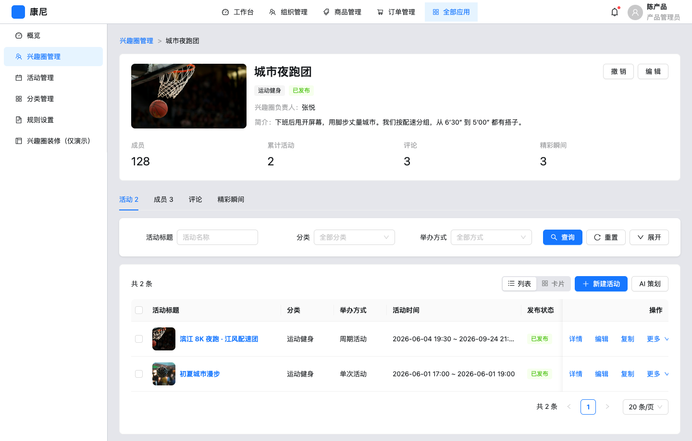
后台兴趣圈详情页-页面整体-头部与Tab：面包屑返回列表；封面、名称、分类、负责人、简介、成员/活动/评论/瞬间统计；Tab 活动/成员/评论/精彩瞬间。
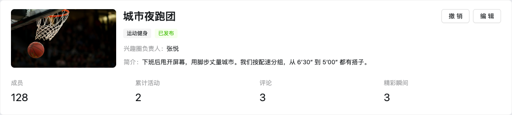
后台兴趣圈详情页-头部模块-信息卡：分类 Tag + 发布状态 Tag；未通过才显示审核 Tag。右上编辑；未发布显示「发布」，已发布显示撤销。
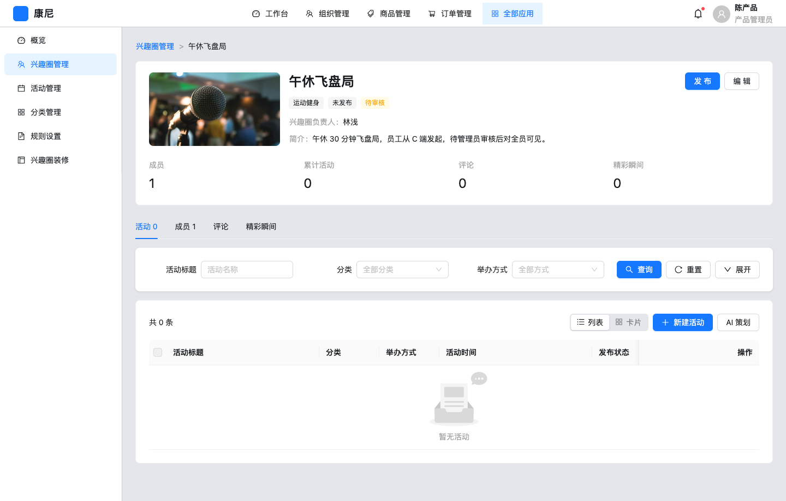
后台兴趣圈详情页-头部模块-待审核标签：auditStatus 非已通过/无需审核时显示 warning/error Tag。
后台兴趣圈详情页-活动模块-内嵌列表：复用活动列表并带 groupId 过滤。
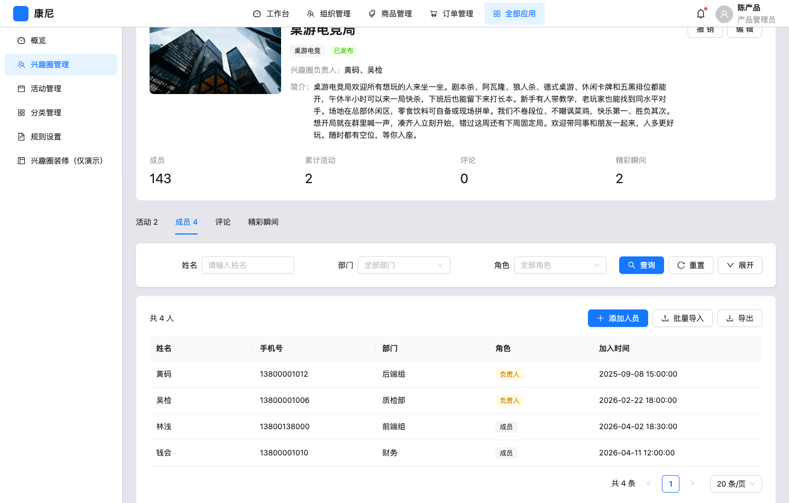
后台兴趣圈详情页-成员模块-成员表：添加人员 / 批量导入 / 导出；列与导入模板均为姓名、部门、角色（lead=负责人 / member=成员），无手机号；无操作列、无删除、无入组审核。
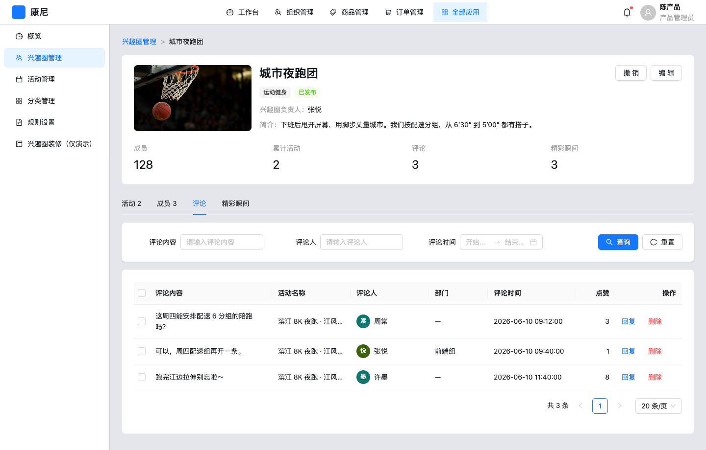
后台兴趣圈详情页-评论模块-评论表：列：评论内容、评论人、点赞；行操作回复在前、删除在后。
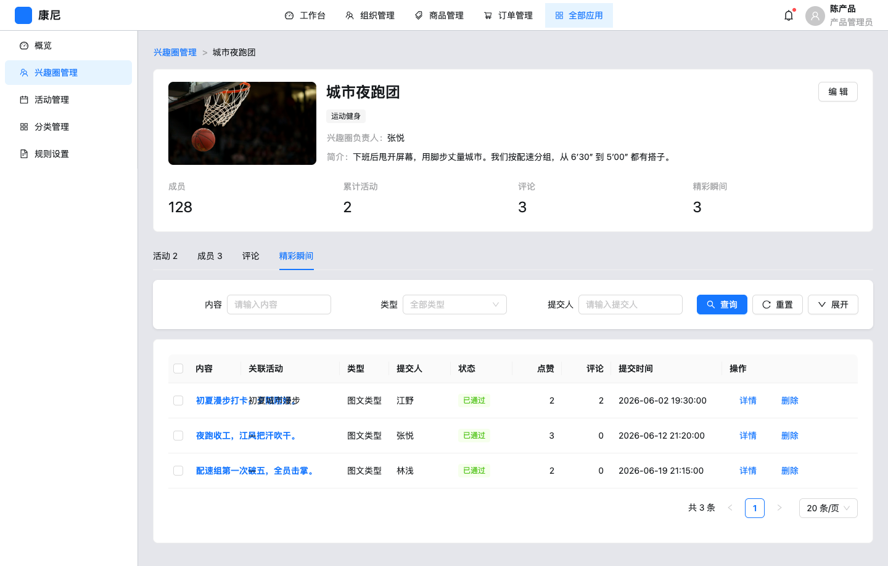
后台兴趣圈详情页-瞬间模块-瞬间表：内容/类型/提交人/状态/点赞/评论/时间；行操作详情、删除。产品确认无审核（无通过/驳回）。
兴趣圈不存在：Empty「兴趣圈不存在或已删除」+ 返回列表。
添加人员弹窗：TreeSelect 必选至少 1 人，已在圈人员 disabled。
7.4 后台活动管理页
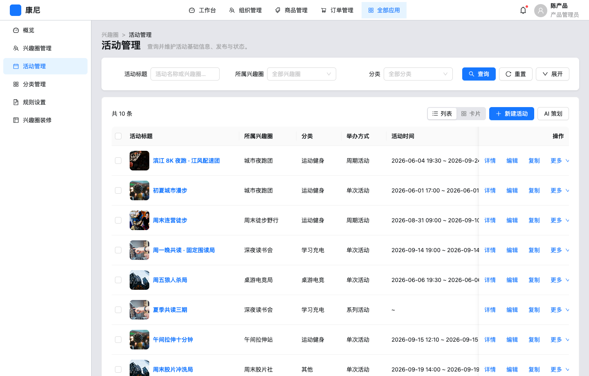
后台活动管理页-页面整体-列表：筛选 + 列表/卡片 + 新建活动 + AI 策划 + 列表视图多选批量。副标题：查询并维护活动基础信息、发布与状态。
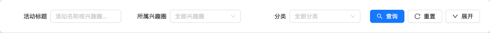
后台活动管理页-查询筛选-条件区：活动标题、所属兴趣圈、分类、举办方式、活动时间、发布状态、状态（生命周期）、创建时间、发布时间。无审核状态。
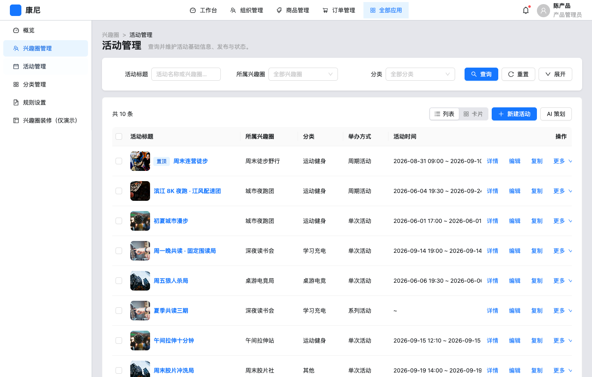
后台活动管理页-列表表格-数据表：列：封面+标题、所属兴趣圈、分类、举办方式、活动时间、发布状态、状态、操作。无审核列。行选择仅列表视图。
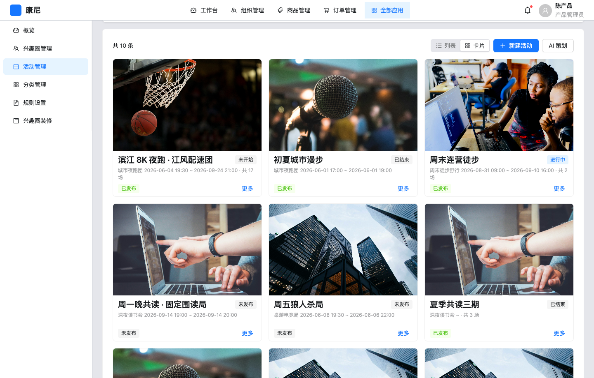
后台活动管理页-卡片模块-卡片网格：封面、生命周期、置顶、发布状态与操作。
行操作状态机
| 发布条件 | 主状态按钮 | 禁用条件 |
|---|
| 已发布 | 撤销 | canRevokeInterestGroupActivity 为假时 disabled + tooltip |
| 未发布 | 发布 | 始终可点（不再校验活动审核状态） |
另有：详情、编辑、复制、置顶/取消置顶；未置顶可上移/下移（单击即时生效，自定义区首项上移、末项下移置灰，置顶行不展示排序按钮）；新建活动插入置顶区之后第一位。满足条件时截止报名/恢复报名、终止活动、删除（已有人报名则删除 disabled「已有人报名，无法删除」）。批量：撤销、批量发布、设置分类。测试断言页面不含「审核状态」「提交审批」「批量提交审批」。
空数据：无筛选「暂无活动」；有筛选「没有匹配的活动」。
7.5 后台新建/编辑活动页
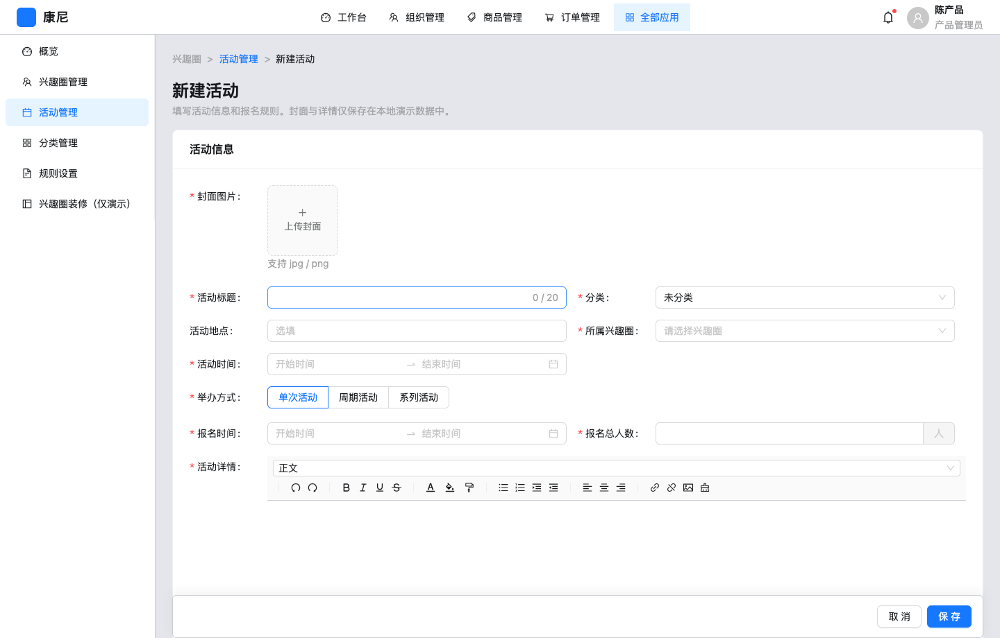
后台新建活动页-表单模块-整页：封面、标题≤20、分类、活动地点、所属兴趣圈、活动时间、举办方式、报名时间、报名总人数/每场人数上限、活动详情、通知、签到。无可见范围/高级设置/活动积分/是否审核报名。底栏 aria「取消」「保存」。
字段说明（校验来自 validateInterestGroupActivityForm）
| 字段 | 组件路径 | 必填 | 边界 |
|---|
| 封面 | 后台新建活动页-基础信息-封面上传 | 是 | 无则「请上传封面图片」 |
| 活动标题 | 后台新建活动页-基础信息-标题 | 是 | ≤20 |
| 分类 | 后台新建活动页-基础信息-分类 | 是 | 启用分类 |
| 活动地点 | 后台新建活动页-基础信息-地点 | 否 | ≤80 |
| 所属兴趣圈 | 后台新建活动页-基础信息-兴趣圈 | 是 | 选圈子可回填分类 |
| 活动时间 | 后台新建活动页-排期-时间范围 | 单次/窗口是 | 结束≥开始，详见 schedule 校验 |
| 举办方式 | 后台新建活动页-排期-方式 | 是 | once / recurring / series |
| 报名人数 | 后台新建活动页-报名-人数 | 是 | 单次 label「报名总人数」；周期/系列「每场人数上限」；整数 ≥1 |
| 报名开始 | 后台新建活动页-报名-开始时间 | 是 | 空则「请选择报名开始时间」 |
| 报名结束 | 后台新建活动页-报名-结束时间 | 单次是 | 周期/系列用开场前小时 |
| 开场前小时 | 后台新建活动页-报名-截止小时 | 周期/系列是 | ≥0 整数 |
| 活动详情 | 后台新建活动页-详情-富文本 | 是 | trim 非空 |
| 发送通知 | 后台新建活动页-通知-开关 | 否 | 开启后仅通知兴趣圈成员，无通知对象选项 |
| 扫码签到 | 后台新建活动页-签到-开关 | 否 | 开则可填开始前分钟、动态码 |
表单不展示「是否审核报名」；提交时写死 needAudit: false、signupApprovalNodes: []。保存失败：表单 rules + 函数返回中文错误 message。成功：create 跳详情。
7.6 后台活动详情页
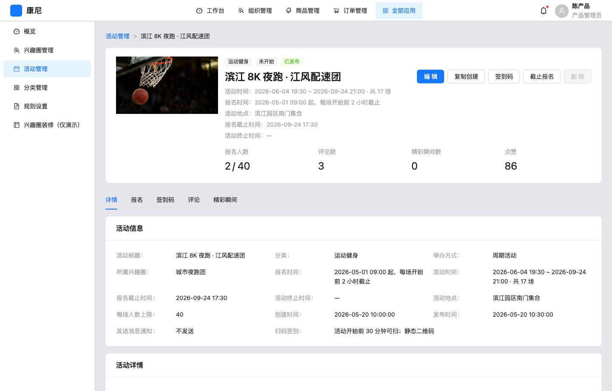
后台活动详情页-页面整体-头与详情Tab：封面、标题、分类/生命周期/发布状态 Tag；头部无活动审核 Tag。
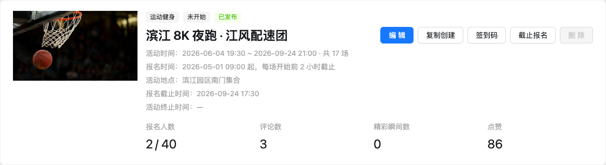
后台活动详情页-头部模块-操作按钮：编辑、复制创建；签到开启时「签到码」跳 Tab。
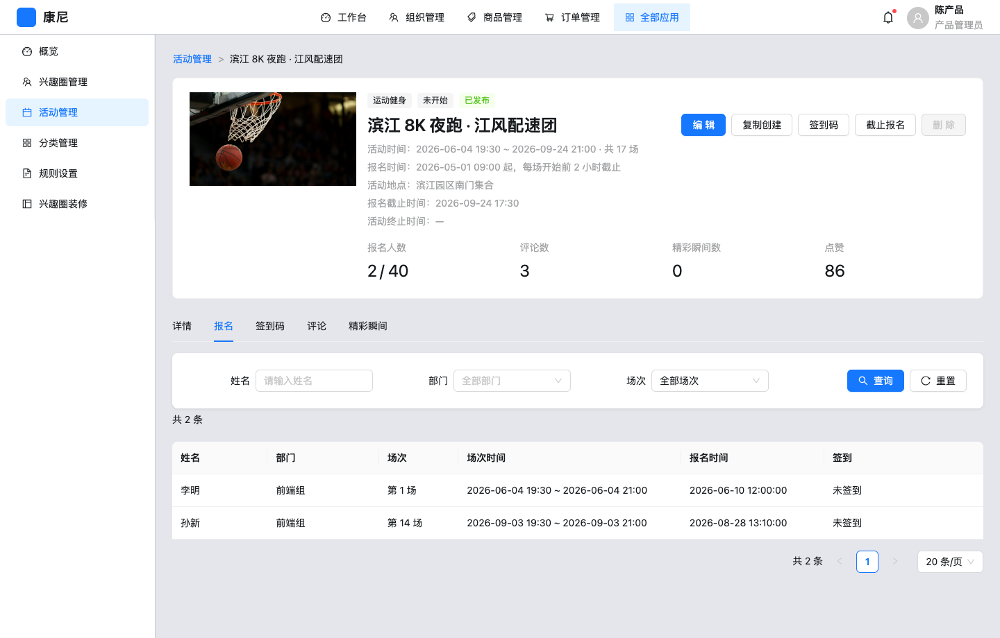
后台活动详情页-报名模块-名单表：筛姓名/部门/场次；列姓名、部门、场次、报名时间、签到。无通过/驳回。
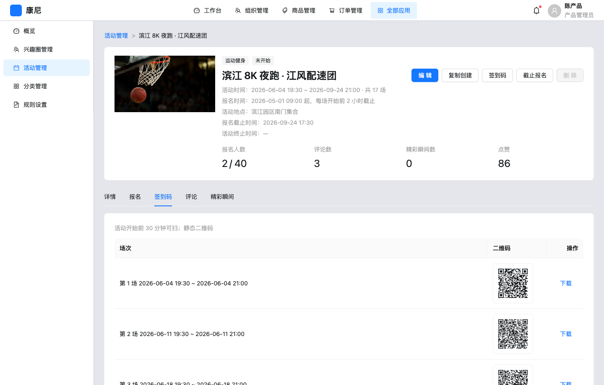
后台活动详情页-签到模块-二维码：按场次展示签到码；动态码约 5 分钟刷新（与 C 端文案一致）。
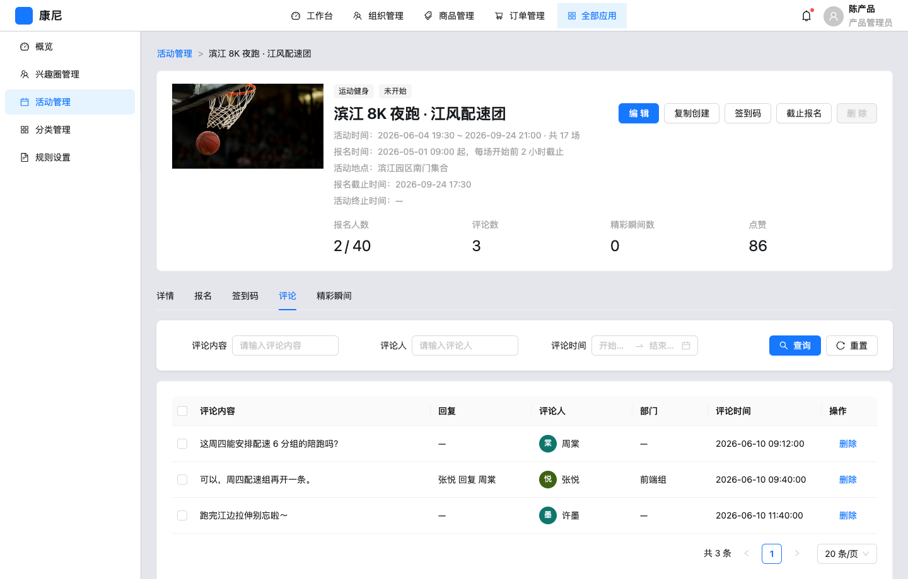
后台活动详情页-评论模块-评论表：活动维度评论。管理员删除评论：产品确认不扣回员工积分。
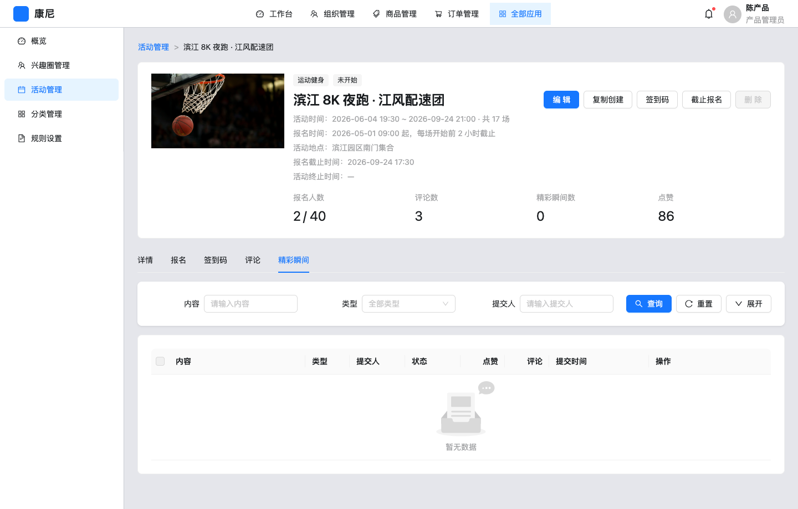
后台活动详情页-瞬间模块-瞬间表：活动维度瞬间列表，能力同圈子详情：查看/删除，无审核。管理员删除瞬间不扣回积分。
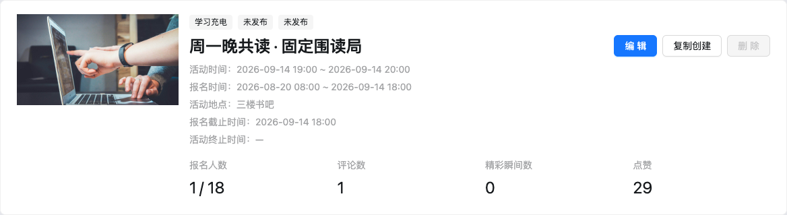
后台活动详情页-头部模块-未发布态：发布状态 Tag 为未发布；可点发布后对 C 端可见。种子如 id=301「周一晚共读 · 固定围读局」。
7.7 后台分类管理页
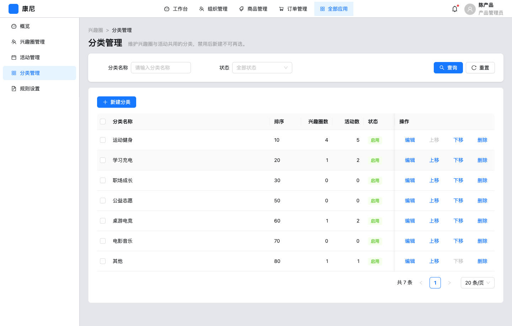
后台分类管理页-页面整体-分类表：分类名称、排序、状态启用/禁用、操作。
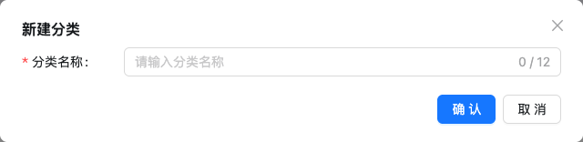
后台分类管理页-新建模块-分类弹窗：名称必填空白校验，maxLength 12，重名「分类名称已存在」。
7.8 后台规则设置页
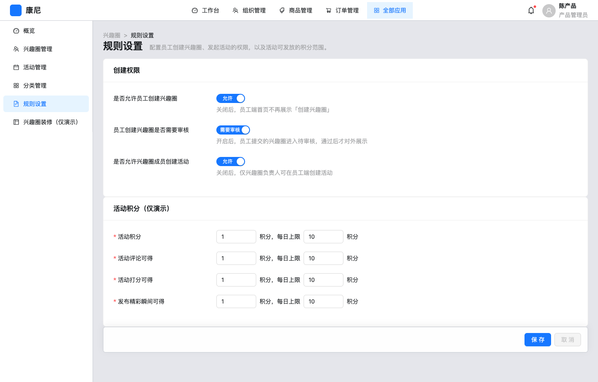
后台规则设置页-页面整体-表单：创建权限 + 活动积分（仅演示）；底栏保存始终可点、取消仅 dirty。
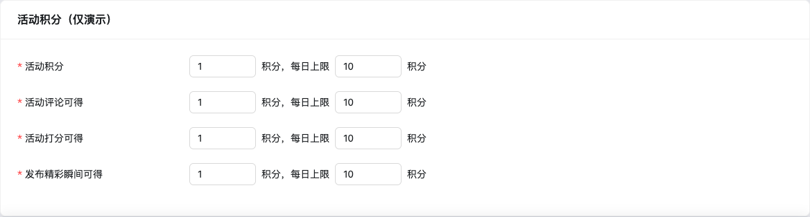
后台规则设置页-积分模块-积分项：卡标题「活动积分（仅演示）」。四行固定额度：活动积分、活动评论可得、活动打分可得、发布精彩瞬间可得。每行「N 积分，每日上限 M」。无下限。每日上限不得小于单次。
积分发放与扣回（产品确认，落地账本）
额度来自本页四行，对所有活动统一、固定，不在单场活动表单再配。C 端当前不展示到账。
| 触发 | 发哪一项 | 何时入账 | 前置 | 扣回 |
|---|
| 参加活动 | 活动积分（规则页「活动积分」） | 活动结束后一次结算 | 须已参加。若开启签到码：须完成扫码，未扫码不发活动积分。未开签到码：结束后向已报名/已参加员工发放 | — |
| 活动评论 | 活动评论可得 | 评论提交成功 | 固定单次分 + 每日上限 | 员工自己删除该评论：扣回；管理员删除：不扣回 |
| 活动评分 | 活动打分可得 | 点确认评分成功 | 活动已结束 + 报名已通过；1–5 星每人一次。原型有 UI，积分账本未入账 | — |
| 发布精彩瞬间 | 发布精彩瞬间可得 | 发布成功 | 固定单次分 + 每日上限 | 员工自己删除该瞬间：扣回；管理员删除：不扣回 |
扣回只针对该条内容当时发过的积分，不影响同日其他已发记录。管理员删内容后员工账上仍保留积分。原型 store 无积分流水，本表为上线必须实现口径。
创建权限三项：是否允许员工创建兴趣圈、员工创建兴趣圈是否需要审核、是否允许兴趣圈成员创建活动。后两项中「建圈是否审核」与「是否允许员工创建兴趣圈」联动：关闭允许建圈后隐藏审核开关，并强制 employeeCreateGroupNeedAudit=false。页面不含「员工创建活动是否需要管理员审核」、不含「谁可以创建活动」。副标题仍写「积分范围」，与控件不一致。成功 message「规则设置已保存」。关闭员工建圈后，C 端快捷菜单不再渲染「创建兴趣圈」。积分走 initialInterestGroupPointRules（报名单次默认 1），与员工活动应用规则隔离。
7.9 后台兴趣圈装修页
页面目标：配置 H5/PC 首页区块。组件库：搜索、AI助手、轮播图、兴趣圈、活动、精彩瞬间。顶栏有演示提示 DEMO_DECO_PAGE_HINT：「仅方便演示使用，实际无此装修页面，统一在H5/PC装修中实现」。
默认画布（defaultIgDecoPageFor）：search → groups（标题「热门兴趣圈」，H5 横滑 5 条 / PC 大图 3 条）→ activity（标题「活动」，大图，H5 3 条 / PC 6 条）→ moments（标题「往期精彩回顾」，H5 横滑 5 条已结束活动 / PC 大图 4 条）。不含 banner、AI。顶栏「页面设置」可改 pageTitle（默认「兴趣圈」），C 端 H5/PC 壳标题读该字段。
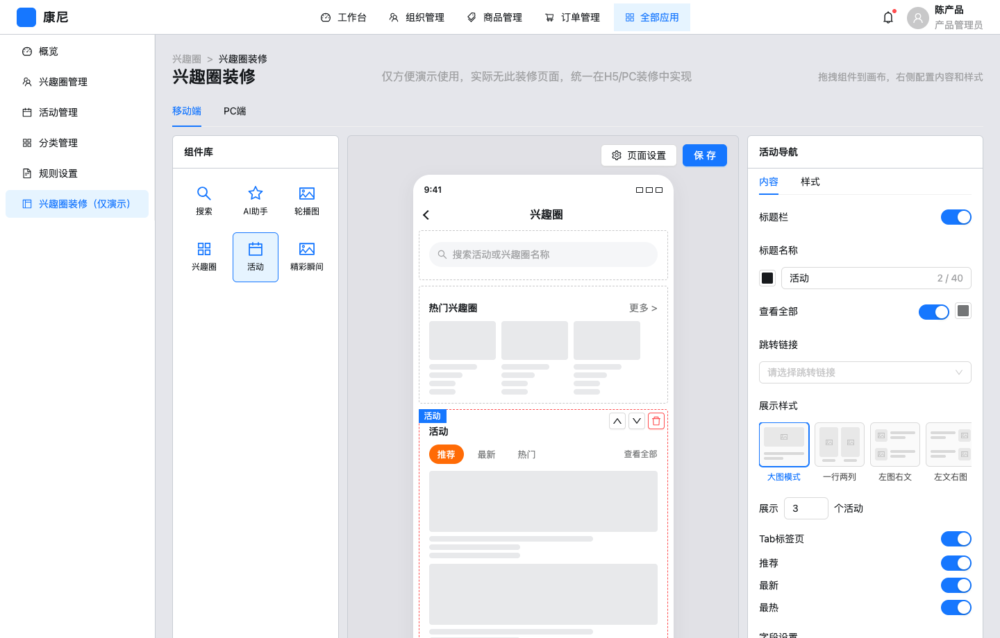
后台兴趣圈装修页-工作台-页面整体：左组件库、中画布、右配置；顶栏移动/PC 切换。
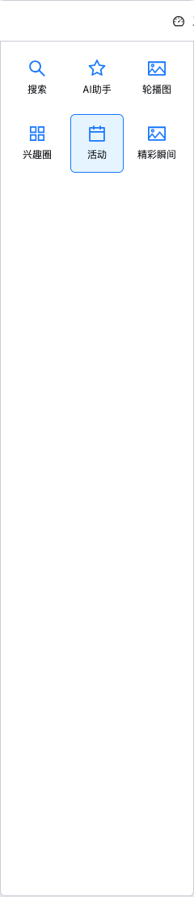
后台兴趣圈装修页-组件库-调色板：六类区块可加入画布。
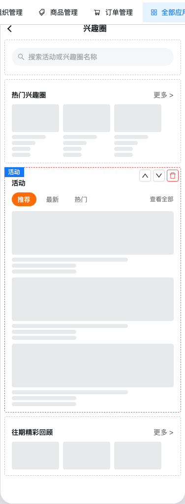
后台兴趣圈装修页-画布模块-移动预览：默认四块：搜索、热门兴趣圈、活动、往期精彩回顾。可改标题栏、查看全部、卡片字段、Tab、样式、条数。
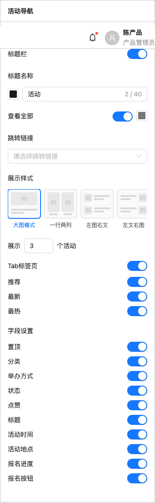
后台兴趣圈装修页-配置模块-检查器：选中区块后编辑标题/更多链接/列表样式/列数/条数/占位文案；轮播可配跳转兴趣圈。
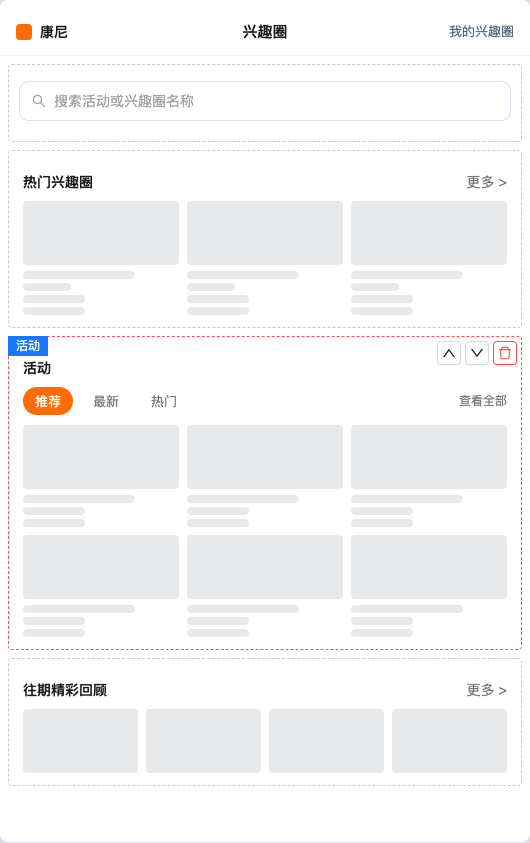
后台兴趣圈装修页-画布模块-PC预览：hash interest-group-layout-pc；圈子/瞬间 PC 仅大图/左图/左文。
组件显示逻辑
| 组件路径 | 默认 | 显示/隐藏 | 启用 | 数据来源 |
|---|
| 后台兴趣圈装修页-工具栏-保存 | 主按钮文案「保存」，aria「保存」 | 始终 | 始终 | 点击 publishIgDecoration(surface)；toast「已保存，C端首页已更新」。无单独「发布」钮 |
| 后台兴趣圈装修页-画布-增删改排序 | 即时生效 | 始终 | 始终 | saveIgDecoration 写 draft。C 端 useIgDecoration=draft |
| 后台兴趣圈装修页-轮播-链接选择 | IgBannerLinkPicker | banner 区块 | 可选已有圈子 | 兴趣圈列表 |
C 端按 layout.blocks 顺序渲染。H5 活动 Tab 可被装修关掉（showActivityTabs）或只开最新/热门。圈子/活动卡片字段（标题、分类、简介、成员、报名进度、报名按钮等）均可关。标题默认「兴趣圈」。
7.10 H5 兴趣圈首页
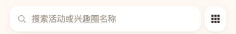
H5首页-搜索模块-搜索条与菜单钮：默认占位「搜索活动或兴趣圈名称」（非 input type=search）；右侧九宫格快捷菜单。
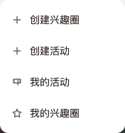
H5首页-快捷模块-弹出菜单：创建兴趣圈（规则可藏）、创建活动、我的活动、我的兴趣圈。创建活动不按 hostable 隐藏。
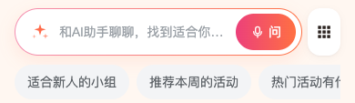
H5首页-AI模块-助手入口：默认画布无此块。运营加入后出现，快捷菜单可挂在 AI 条旁。芯片 HINTS 仍写「适合新人的小组」；对话页输入占位「和小趣说点什么…」；回复与兜底已用「适合新人的兴趣圈」。
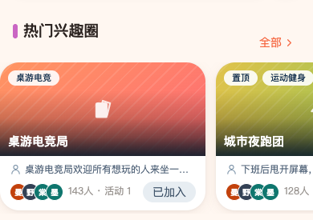
H5首页-兴趣圈模块-卡片区：标题「热门兴趣圈」；可发现=已发布且非待审/驳回；名额「N人 · 活动 M」，无单独「成员N」。不展示活动区域文案。
H5首页-活动模块-排序Tab：推荐 / 最新 / 热门；H5 可被装修关闭或裁剪。PC 始终三 Tab。
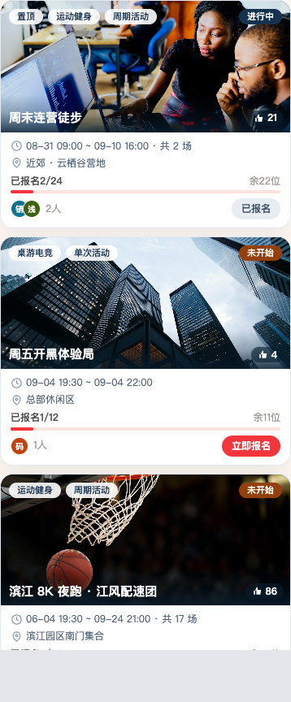
H5首页-活动模块-活动卡列表：默认大图。名额「已报名2/24」「余22位」无空格。封面叠「周期活动」等举办方式。CTA 见下表。
H5首页-回顾模块-已结束活动轨：列出已结束活动卡（如「初夏城市漫步」+「已结束」），不是瞬间正文。
首页活动卡 CTA（igHomeCta，点卡进详情，按钮本身不报名）
| 条件 | 文案 | 启用 |
|---|
| 已结束 / 已终止 / signupClosed | 报名已结束 | 否 |
| 已报名 | 已报名 | 否 |
| 其他 | 立即报名 | 是（仅展示，点击走开详情） |
enrollInfo 仍有「报名+入组 / 选场次报名 / 取消报名」，首页不用。顶栏「返回」回门户；无底栏「回主页」、无 c-h5-detail-fab。子页打开时顶栏 pointer-events:none。快捷菜单默认挂搜索条旁；画布只有 AI 无搜索时挂 AI 条旁。
7.11 H5 子页（栈内与独立 hash）
H5搜索页-查询模块-搜索页：空查询提示「输入名称搜索活动或兴趣圈」。无「回主页」悬浮按钮。
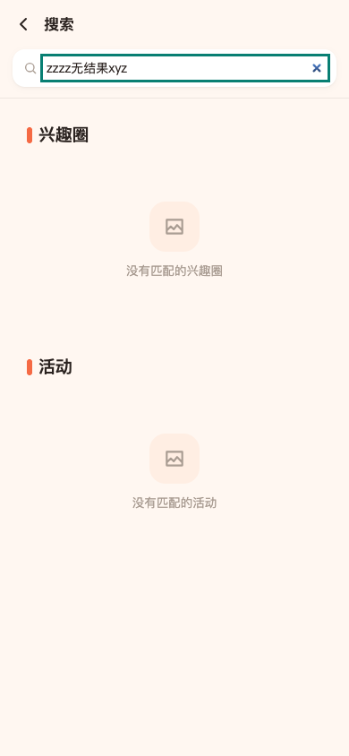
H5搜索页-结果模块-无结果：无匹配时分栏空态：没有匹配的兴趣圈 / 没有匹配的活动。无「回主页」悬浮按钮。
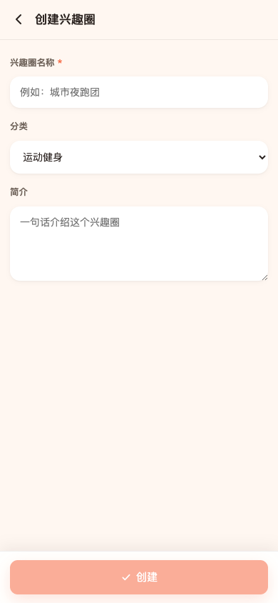
H5创建兴趣圈页-表单模块-字段：名称*、分类（CATS 8 项默认运动健身）、简介。无封面、无 maxlength。
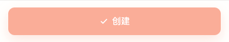
H5创建兴趣圈页-底部模块-创建按钮：名称 trim 为空则 disabled；有字 primary 可点。
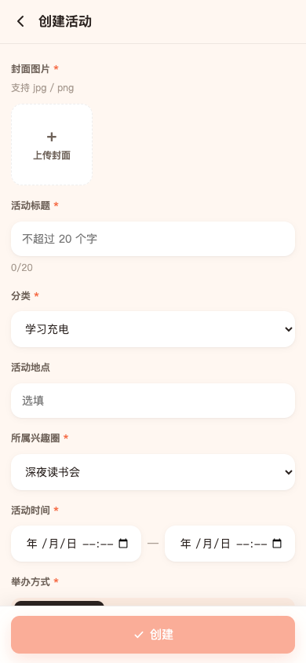
H5创建活动页-表单模块-字段：封面、活动标题、分类、活动地点、所属兴趣圈、举办方式（单次/周期/系列）、活动时间、报名时间、报名总人数、活动介绍、发送消息通知（仅通知圈内成员，无通知对象）、签到。无可见范围/积分/报名信息收集。
 H5创建活动页-底部模块-创建按钮：底栏「创建」；formError 非空则 disabled。
H5我的活动页-列表模块-分段：我创建的 / 我报名的；左图卡片。
H5我的兴趣圈页-列表模块-分段：我创建的 / 我加入的；左图卡片。
H5全部兴趣圈页-列表模块-发现：全部可发现圈子。排序跟后台
H5创建活动页-底部模块-创建按钮：底栏「创建」；formError 非空则 disabled。
H5我的活动页-列表模块-分段：我创建的 / 我报名的；左图卡片。
H5我的兴趣圈页-列表模块-分段：我创建的 / 我加入的；左图卡片。
H5全部兴趣圈页-列表模块-发现：全部可发现圈子。排序跟后台 comparePinSort（置顶优先再 sortIndex）。
H5全部活动页-列表模块-发现：状态分段：全部/未开始/已结束/已终止；日期：全部/本周/本月；搜索活动名称、兴趣圈、标签。列表顺序同样置顶优先。
H5兴趣圈详情页-页面整体-主信息：封面、分类、简介（H5 过长可展开）、成员/活动数。不强调活动区域。
H5兴趣圈详情页-关系模块-主按钮：未加入：加入兴趣圈；已加入：退出（负责人失败 toast）；pending：审核中 disabled。
 H5兴趣圈详情页-成员模块-成员网格：负责人标「负责人」（可多人，如桌游电竞局黄码+吴检）；成员卡展示部门；H5 网格两列。不再写「组长」。
H5兴趣圈详情页-圈子模块-瞬间流：成员可见「发布瞬间」。
H5发布瞬间页-表单模块-编辑器：必填所属兴趣圈 + 关联活动（进行中/已结束且已报名）；文案+图/视频。toast 仍写「精彩瞬间已提交审核」（产品确认不审，文案残留）。
H5活动详情页-页面整体-详情：封面叠分类/举办方式；信息卡：时间、地点、发起人、总名额/每场名额；有场次则「最近场次」+已报n场；已报名人员可「查看名单」。已结束默认可折叠「查看活动详情 / 收起活动详情」。进行中评论占位「说点什么」；已报名且进行中/已结束可出瞬间 Tab 并发布（不限次数）。发起人或圈主且开启签到时出签到二维码。
H5活动详情页-评分模块-星级：仅已结束、夹在简介与评论/瞬间之间。文案「活动评分 均分 · N 人评分」。已报名未评：1–5 星 +「确认评分」；已评星星保留、无确认钮。进行中无此块。
H5活动详情页-底部模块-CTA栏：未入组提示「报名将同时加入该兴趣圈」；点赞、分享、立即报名/取消报名/报名已结束。
H5活动详情页-报名模块-场次选择弹层：legend「参加场次 *」。未报名过标题「填写报名信息」、主按钮「确认报名」；已报名过标题仍写「立即报名」、主按钮「保存场次」。可「展开全部场次」。不展示「林浅 · 手机号」。
H5兴趣圈详情页-成员模块-成员网格：负责人标「负责人」（可多人，如桌游电竞局黄码+吴检）；成员卡展示部门；H5 网格两列。不再写「组长」。
H5兴趣圈详情页-圈子模块-瞬间流：成员可见「发布瞬间」。
H5发布瞬间页-表单模块-编辑器：必填所属兴趣圈 + 关联活动（进行中/已结束且已报名）；文案+图/视频。toast 仍写「精彩瞬间已提交审核」（产品确认不审，文案残留）。
H5活动详情页-页面整体-详情：封面叠分类/举办方式；信息卡：时间、地点、发起人、总名额/每场名额；有场次则「最近场次」+已报n场；已报名人员可「查看名单」。已结束默认可折叠「查看活动详情 / 收起活动详情」。进行中评论占位「说点什么」；已报名且进行中/已结束可出瞬间 Tab 并发布（不限次数）。发起人或圈主且开启签到时出签到二维码。
H5活动详情页-评分模块-星级：仅已结束、夹在简介与评论/瞬间之间。文案「活动评分 均分 · N 人评分」。已报名未评：1–5 星 +「确认评分」；已评星星保留、无确认钮。进行中无此块。
H5活动详情页-底部模块-CTA栏：未入组提示「报名将同时加入该兴趣圈」；点赞、分享、立即报名/取消报名/报名已结束。
H5活动详情页-报名模块-场次选择弹层：legend「参加场次 *」。未报名过标题「填写报名信息」、主按钮「确认报名」；已报名过标题仍写「立即报名」、主按钮「保存场次」。可「展开全部场次」。不展示「林浅 · 手机号」。
详情 CTA（igDetailCta）
| 条件 | 文案 | enabled | action |
|---|
| 已结束 / 已终止 / signupClosed | 报名已结束 | 否 | none |
| 入组 pending | 立即报名 | 否 | none |
| 已报名且有场次 | 立即报名 | 是 | adjust |
| 已报名无场次 | 取消报名 | 是 | cancel |
| 其他 | 立即报名 | 是 | signup |
H5扫码签到页-结果模块-反馈：解析 query session/token；成功/已签过/失败文案；按钮返回兴趣圈。
H5往期精彩回顾页-目录模块-独立页：hash #/c/h5/interest-groups/moments；已结束活动列表，返回兴趣圈首页。
7.12 PC 员工端
与 H5 同一 IgProvider + 栈。差异：PcActivityShell；装修 surface=pc（默认圈子 3 列大图、活动 6 条 3 列、回顾 4 列）；子页 overlay；往期独立页有「← 返回首页」。
PC首页-AI模块-助手入口：默认无。加入 AI 区块后与 H5 同一组件。
PC首页-快捷模块-弹出菜单：规则允许时含创建兴趣圈。
PC首页-活动模块-网格列表：列数来自装修 columnCount，不再写死 6 条三列。
PC搜索页-查询模块-搜索：栈内搜索，交互同 H5。
PC创建兴趣圈页-表单模块-字段：字段同 H5。
PC创建活动页-表单模块-字段：字段同 H5。
PC活动详情页-页面整体-详情：overlay 详情。已结束同样出活动评分块。
PC活动详情页-底部模块-CTA栏：报名 CTA 逻辑同 H5。
PC兴趣圈详情页-页面整体-主信息：加入/退出与 Tab 同 H5。
PC往期精彩回顾页-目录模块-独立页：#/c/pc/interest-groups/moments；已结束活动卡 + 「← 返回首页」。